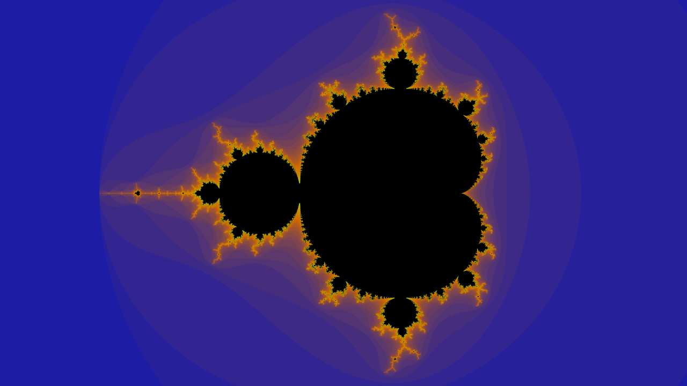

Esta web ha sido desarrollada como parte del 'Trabajo de Fin de Grado' de Juan Antonio Villegas Recio, alumno de Ingeniería Informática y Matemáticas en la universidad de Granada, durante el curso 2021/2022. Si lo desea, puede consultar la memoria, la documentación o el código fuente del proyecto en GitHub.

¿Qué es un fractal?
Hay distintas definiciones de fractal, basadas en el concepto de autosimilaridad y en el de dimensión. La dimensión es más compleja de entender, pero la autosimilaridad se puede entender con algunos ejemplos:-
El Triángulo de Sierpinski

-
El Conjunto de Cantor

-
O el Copo de nieve de Koch

Fíjate en que cada figura está compuesta de partes que, a escala, son copias de la figura original. Por ejemplo, "el triángulo de Sierpinski está compuesto de 3 triángulos de Sierpinski", cada uno la mitad de grande que el original (a escala \( \frac 1 2 \)). O "el conjunto de Cantor está formado por dos conjuntos de Cantor", cada uno a escala \(\frac 1 3\) del original.
Cada uno de estos extraños objetos encierra la particularidad de tener una dimensión no entera, es decir, que el triángulo de Sierpinski no es un objeto de 2 dimensiones como un triángulo normal y corriente, pero tampoco de 1 como una línea recta, su dimensión es un número fraccionario entre 1 y 2, por muy antintuitivo que parezca. Precisamente es este el rasgo diferenciador de lo que llamamos objetos fractales.
Existen otros tipos de fractales más complejos pero también visualmente más atractivos. Es el caso del conjunto de Mandelbrot, el cual para muchos es 'el objeto más complejo de la matemática':
Otra opción en esta misma línea son los conjuntos de Julia:
Tanto los conjuntos de Julia como el conjunto de Mandelbrot son figuras fractales que se obtienen coloreando el plano, aunque para obtener cada imagen hay que aplicar un algoritmo levemente diferente.
También existen fractales tridimensionales, por ejemplo generalizaciones de los conjuntos de Julia o una bella generalización 3D del conjunto de Mandelbrot: el conjunto de Mandelbub.